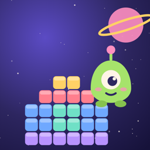

Dronlarla renkli modüller kurduğun, gittikçe zorlaşan bir bulmaca oyunu. iPhone için ücretsiz, internetsiz oynanır.
Destek · Gizlilik Politikası
A puzzle game where you build colorful modules with drones. Free on iPhone, plays offline.
Support · Privacy Policy